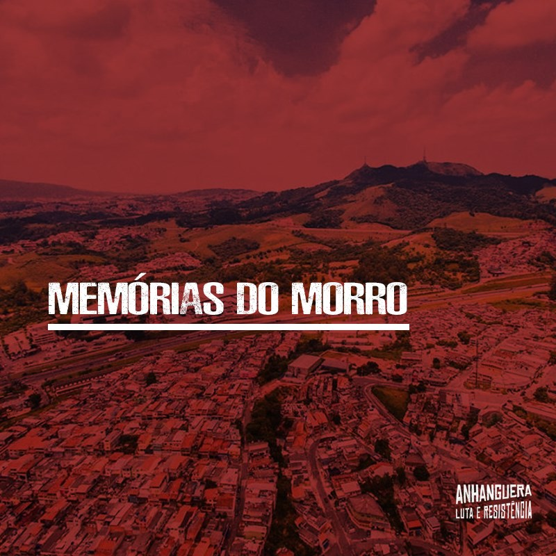
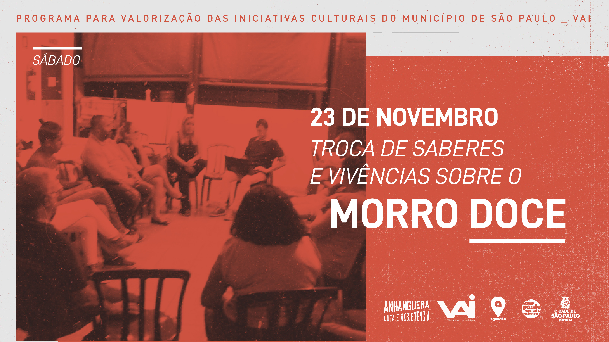

        <!-- Four -->
        <section id="four" class="wrapper alt style1">
            <div class="inner">
              <h2 class="major" id='conteudo_site'>Conteúdos no Site</h2>
              <p> Abaixo você encontra um resumo sobre o conteúdo deste site. </p>
              <section class="features">
                <article> 
                  <!-- <a href="#" class="image">
                    
                  </a> -->
                  <h3 class="major">Projeto Memória DO MORRO&nbsp; &nbsp;&nbsp;</h3>
                  <!-- <p>O projeto Memórias do Morro, fomentado pelo Programa VAI
                    (Programa Para a Valorização de Iniciativas Culturais), visa
                    rebuscar a possível história da formação do Distrito de
                    Anhanguera, assim como a distinção entre o distrito e os seus
                    Bairros constituintes, que por muitas vezes são considerados
                    como sendo o mesmo local.</p> -->
                  <a href="memorias_do_morro/projeto_memorias_do_morro.html" class="special">Ver
                    Mais</a> </article>
                
                  <article>
                  <!-- <a href="#" class="image"></a> -->
                  <!-- <a href="#" class="image">
                    
                  </a> -->
                  <h3 class="major">A História das Cavas de Ouro</h3>
                  <!-- <p>Como parte do projeto “Memórias do Morro”, promovido por nós,
                    em parceria com a Secretaria Municipal de Cultura, por meio do
                    Programa VAI, apresentamos aos moradores do Morro Doce e
                    demais interessados o debate “A história das Cavas de Ouro
                    como parte da memória do Morro Doce e do Brasil Colônia”. </p> -->
                  <a href="cavas_de_ouro.html" class="special">Ver mais</a> 
                  <!-- <a href="cavas_de_ouro.html#images_18_01_20"
                    class="special">Ver fotos</a>  -->
                  
                  </article>
                <!-- <article> -->
                <!-- <a href="#" class="image"></a> -->
                <!-- <a href="#" class="image"></a>
                                              <h3 class="major">Memórias do Morro</h3>											<p>Qual é a sua maior lembrança do Morro Doce?
                                                  O evento marcou um momento de diálogo, no qual												foi possível ouvir histórias e contar um pouco da
                                                  nossa vivência no bairro, e todas as transformações												que ocorreram!</p>
                                              <a href="memoria.html" class="special">Ver mais</a>											<a href="memoria.html#images_23_11_12" class="special">Ver fotos</a>
                                          </article> -->
                <article>
                  <!-- <a href="#" class="image"></a> -->
                  <!-- <a href="#" class="image">
                    
                  </a> -->
                  <h3 class="major">Memórias e Teritórios Periféricos (evento) </h3>
                  <!-- <p>O evento “Memórias e Territórios Periféricos” abordou como a
                    formação política e social do nosso território é determinante
                    na forma de consciência e memória coletiva do nosso Morro
                    Doce!</p> -->
                  <a href="memorias_territorios.html" class="special">Ver Mais</a>
                  <!-- <a href="memorias_territorios.html#images_30_11_12" class="special">Ver
                    fotos</a>  -->
                  
                  </article>
                <article> 
                  <!-- <a href="muro_historico.html" class="image">
                  
                  </a> -->
                  <h3 class="major">Acervo Digital</h3>
                  <!-- <p>Registros fotográficos históricos da região do Morro Doce,
                    fornecidos por antigos moradores e obtidos em acervos.</p> -->
                  <a href="acervo_digital.html" class="special">Ver mais</a> 
                </article> 
  
            </section>
  
          </div>
          </section>
  
          
        </section>


        <h3 class="major">PORQUE FALAR DE POLÍTICA?</h3>
            <!-- <p>Vivemos uma crise política. Muitas vezes, a política é enquadrada
              como um simples ato de politicagem ou corrupção. Também é encarada
              de forma procedimental, o ciclo eleitoral, as votações, as
              campanhas, etc.. Ou mesmo, com o destrabalho midiático, a política
              é entendida apenas em termos econômicos de difícil entendimento,
              como inflação, exportação, importação, PIB, etc..</p>
            <p>Porém, acreditamos que a crise política, é uma falta de crença na
              política. Mas a política é a vida, ou seja, é uma parte
              fundamental da vida em comunidade, que está sempre em constante
              interação. Quando grupos se reúnem para debater problemas e
              soluções para a vida coletiva, como por exemplo, brigar para que
              as ruas sejam asfaltadas, melhoria das condições de transporte
              público, ou instalação de rede de água e esgoto, esses grupos
              estão fazendo política.</p>
            <p>A política muitas vezes, é entendida também como os próprios
              serviços e políticas públicas que são ofertados pelos governos.
              Acreditamos que é extremamente importante o conhecimento dessa
              "estrutura política". As divisões burocráticas formais, as
              instâncias de poder decisório e participativo, e os serviços que
              são ofertados pelo Poder Público. Esse conhecimento é importante
              para que haja pressão política, em prol do atendimento das
              demandas coletivas. Durante a revista, isso ficará visível, como
              por exemplo, as manifestações ocorridas de transporte, na
              subprefeitura ou mesmo na Câmara Municipal de São Paulo.</p>
            <p>Nessa revista, tentaremos sistematizar algumas ações políticas
              que aconteceram no nosso território, para que elas sejam
              perpetuadas, expandidas e replicadas. Utilizaremos a memória como
              um ingrediente político que promova a participação, o agrupamento
              e a inquetação dos leitores. </p> -->
            <p> </p>
            <h3 class="major">MAS O QUE É MEMÓRIA?</h3>
            <!-- <p> Embora a memória possa ser compreendida de diversos pontos de
              vista, como por exemplo, neurocientífico, tecnológico e histórico,
              nós assumimos a perspectiva das ciências sociais. Entendemos a
              memória como um processo que é construído coletivamente e que está
              em constante disputa. </p>
            <p>Tivemos a intenção de utilizar a memória do Morro Doce, para
              investigar os enquadramentos e <em>pontos de referência</em> que
              estamos inseridos, os <i>esquecimentos </i>propositais e,
              principalmente, a <em>identidade coletiva </em>com a qual nos
              identificamos e nos recordamos.</p> -->

            <h3 class="major">Qual é a sua principal lembrança do Morro
              Doce?&nbsp;</h3>
            <div class="row">
              <div class="col-6 col-12-medium">
                <h3>MEMÓRIA COLETIVA:</h3>
                <!-- <p>A memória coletiva não é o somatório das memórias individuais. É
                  um processo transmitido de geração em geração em que memórias de
                  diversos eventos e experiências adquirem algum nível de
                  significado cultural e afetivo. Exemplos de memória coletiva são
                  as manifestações por falta de água, que mesmo sem muitos detalhes,
                  registros ou mesmo a própria participação no evento que paralisou
                  a Rodovia Anhanguera, são lembradas por muitos moradores. </p> -->
              </div>

              <div class="col-6 col-12-medium">
                <h3>Pontos de referência:</h3>
                <!-- <p>Os pontos de referência são situações, lugares e caminhos,
                  prédios e arquitetura, que por estarem em nosso cotidiano, são
                  comuns a todos. Ou seja, os pontos de referência são criados no
                  plano material da vida.&nbsp; A <a href="../rodovia_anhanguera.html"
                    class="button primary small"> Rodovia Anhanguera</a> exemplifica
                  o que é um ponto de referência coletivo do nosso território. Isso
                  porque, a rodovia é a única via de acesso para entrada e saída do
                  nosso bairro, sendo um espaço que aloca diversas lembranças
                  comunitárias, como nos casos das diversas manifestações. </p> -->
              </div>
            
            </div>

            <h3>ESQUECIMENTO:</h3>
            <!-- <p>Sabemos que esquecer de alguns fatos do nosso passado é algo
              comum e natural, não conseguimos nos lembrar de 100% das coisas. 
              Porém, o esquecimento pode ser proposital. Quando revisitamos a 
              história da cidade de São Paulo, percebemos o esforço da “memória 
              oficial” em priorizar e enaltecer a atuação dos Bandeirantes. Isso 
              não ocorre em relação a população indígena que foi dizimada, em 
              um processo genocida e violento. Não contar a história e memória 
              desses atores é alocá-los em um patamar de esquecimento. Chamamos
              as memórias dos bandeirantes de “memória oficial” e a da luta 
              dos povos originários da nossa região, de “memórias subterrâneas” 
              que por conta de um processo de esquecimento proposital, precisa 
              ser registrada e compartilhada, para que ela não desapareça.  
            </p> -->